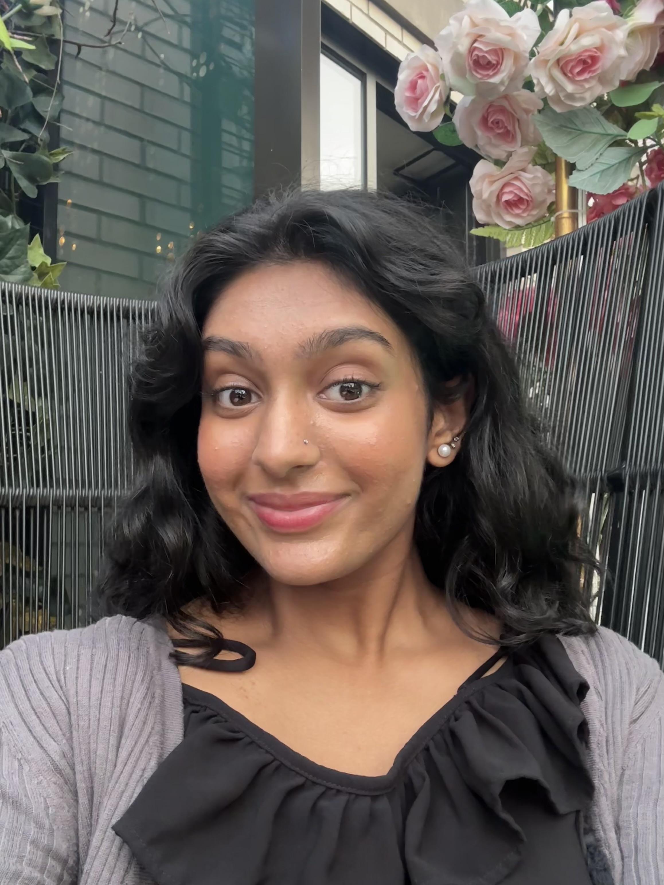

About Me
Hi, I’m Kavya! I’m a passionate computer science student with a keen interest in fintech and engineering. As the first in my family to pursue a career in technology, I’m committed to empowering others, especially women and non-binary individuals, to break into tech and engineering fields. Through my projects, mentorship, and community involvement, I aim to foster collaboration and innovation, all while pushing the boundaries of creativity and problem-solving. When I’m not coding, I’m exploring new ideas, designing interactive experiences, and learning new ways to combine technology with art.
Let's Explore
FIRST-GEN
My Journey
As a first-generation college student and the first woman in my family to pursue engineering, navigating tech hasn't just been about learning code—it's been about breaking barriers. Every class, project, and late-night debugging session has been a step toward rewriting what’s possible for my family and for others like me. I’m deeply committed to opening doors for more students from underrepresented backgrounds to thrive in tech.
WOMEN IN ENGINEERING PROGRAMS @ UIC
Student Lead
Through Women in Engineering Programs (WIEP) at UIC, I lead technical workshops, mentor students, and build spaces where women and non-binary engineers can thrive. From teaching Python and Arduino basics to organizing panels with engineers from Google and Knowles, my goal is to foster both technical confidence and community. We’re not just building robots—we’re building futures.
PROJECTS
Right now, I’m co-developing an HR simulation platform designed for business students—one that’s currently in the process of acquiring VC funding. The project blends storytelling, decision-making, and UX design, giving users a gamified way to understand human resource strategies. I'm also taking a creative coding class that lets me explore sound, visuals, and interactivity through p5.js, using art and code to push the boundaries of what tech can express.
My Future Goals & Interests
I’m working toward a future where I can build my own startup—or join a mission-driven team—at the intersection of fintech, UX design, and social impact. I’m particularly interested in creating tools that support financial transparency and help artists navigate the challenges of generative AI. I want to build technology that feels human, accessible, and rooted in equity.
Contact Me
Email me at: kavyapatel1222@gmail.com
LinkedIn: www.linkedin.com/in/kavya-patel-780314280